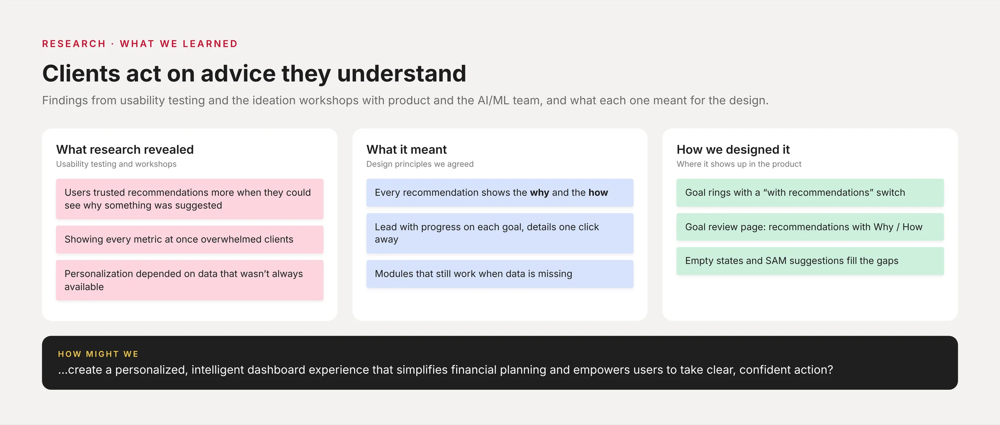
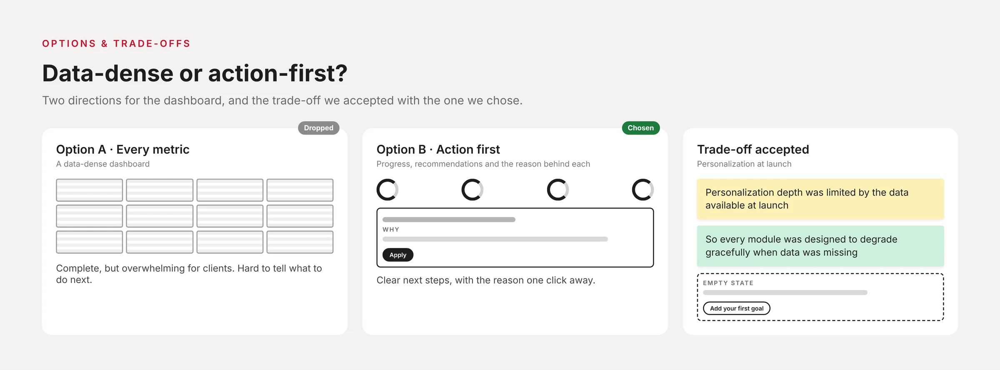
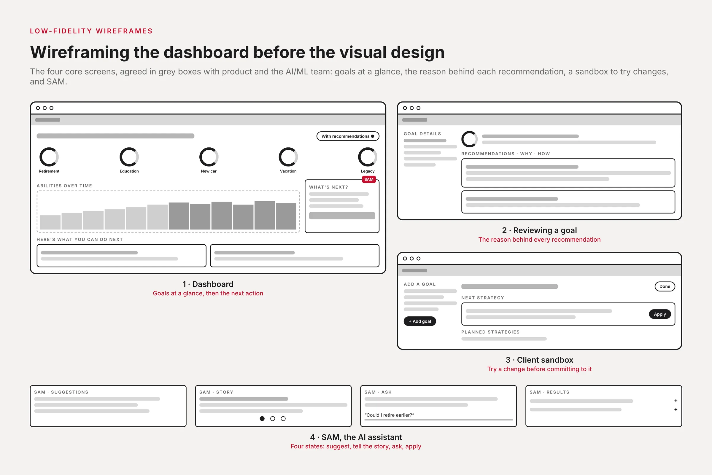
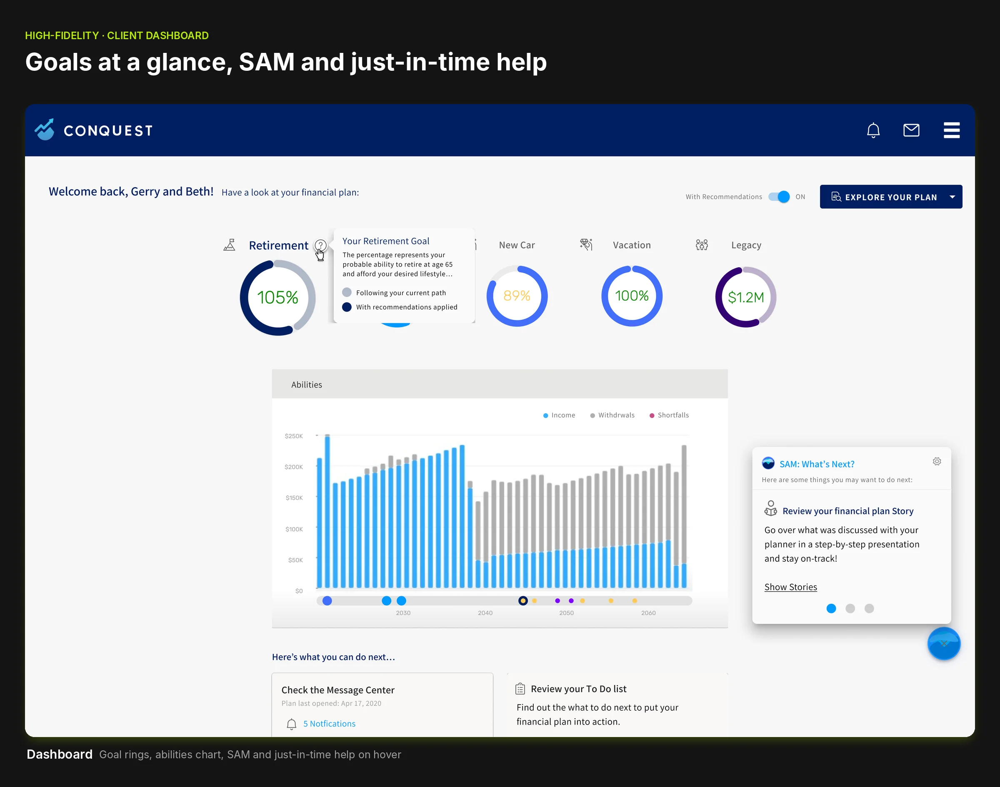
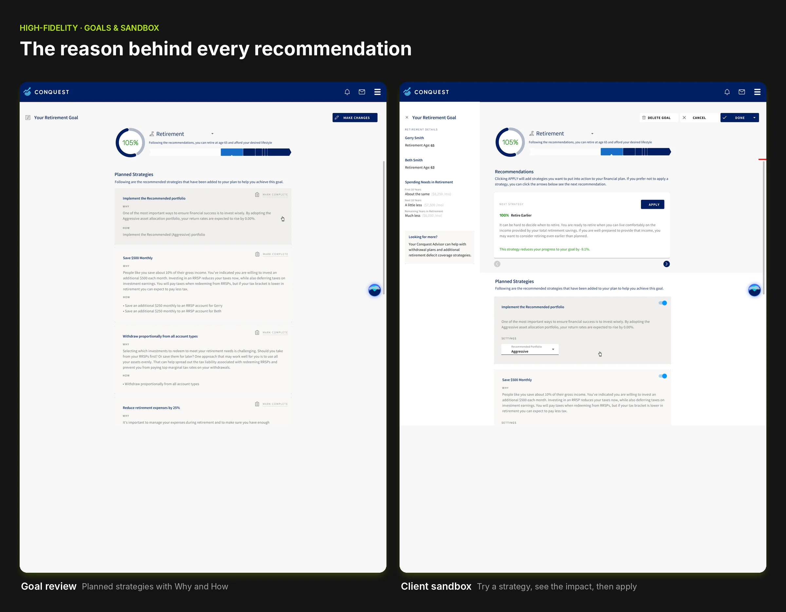
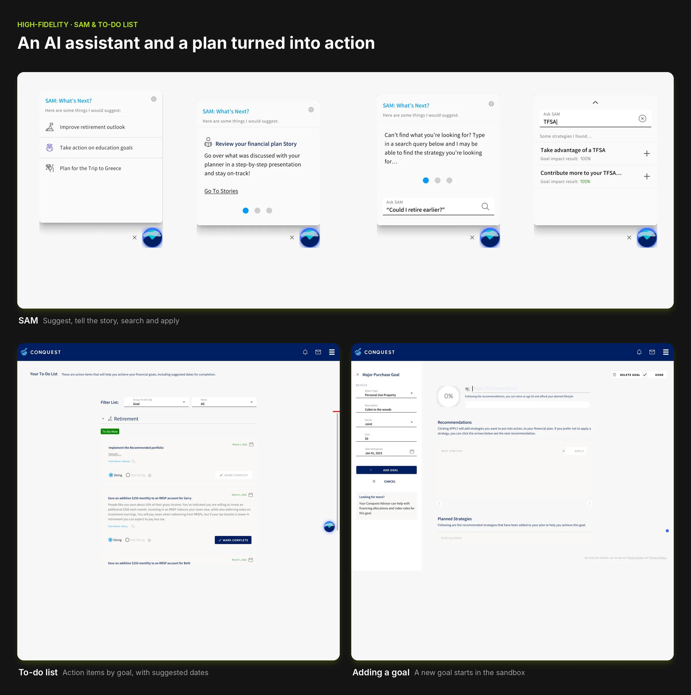

Problem Statement
How might we create a personalized, intelligent dashboard experience that simplifies financial planning and empowers users to take clear, confident action?
Role & Responsibilities
As the Lead Product Designer, I owned the end-to-end design of the new Conquest Planning Dashboard. I partnered closely with product leadership, AI/Machine Learning teams, and engineering to define the dashboards vision, user goals, and feature prioritization. I led research, facilitated ideation workshops, and mapped complex financial concepts into intuitive, user-friendly interactions.
I mentored junior designers, established UX patterns for dashboard modules, and collaborated daily with developers to ensure design accuracy and high-quality implementation.
User Journey
Before moving into prototyping, I outlined the ideal end-to-end dashboard journey from logging in to understanding financial insights to completing recommended actions. This allowed me to identify potential friction, ensure information clarity, and validate whether users could navigate financial content effortlessly during usability testing.

Research, Options & Trade-offs
What research revealed
Users trusted recommendations more when they could see why something was suggested.
Directions explored
- Option A: A data-dense dashboard showing every metric. Dropped: overwhelming for clients.
- Option B: An action-first dashboard with progress indicators, recommendations and the reason behind each. Chosen.
Trade-offs
Personalization depth was limited by the data available at launch, so modules were designed to degrade gracefully when data was missing.


Wireframes
Before the visual design, I wireframed the four core screens and agreed them with product leadership and the AI/ML team: the dashboard with goals at a glance, the goal review page that explains the reason behind each recommendation, the client sandbox for trying changes, and the states of SAM, the AI assistant.

High-Fidelity Designs
The final dashboard experience delivers a smart, dynamic, and highly personalized financial planning interface. It includes interactive progress indicators, AI-powered recommendations from SAM, machine-learning-driven content personalization, and clear action paths through message centers, calculators, task lists, and budgeting tools.
The result is a visually clear, intuitive dashboard that helps users understand their financial health at a glance and empowers them to take informed next steps.



Try the dashboard
A working slice of the client dashboard, rebuilt in code from the final designs with sample data. Switch recommendations on and off to see the plan change, hover the info icons for just-in-time help, and ask SAM, the AI assistant, for a strategy to apply.
Welcome back, Gerry and Beth! Have a look at your financial plan:
The charts below show your ability to achieve your goals if you follow the recommendations.
- Retirement Your Retirement GoalThe percentage represents your probable ability to retire at age 65 and afford your desired lifestyle.
- Education
- New Car
- Vacation
- Legacy
- Nothing added yet. Apply a strategy from SAM.
Results
4 financial institutions requested white-labeled versions of the product during 2021.
How we measured: formal white-label requests from financial institutions during the sales cycle.